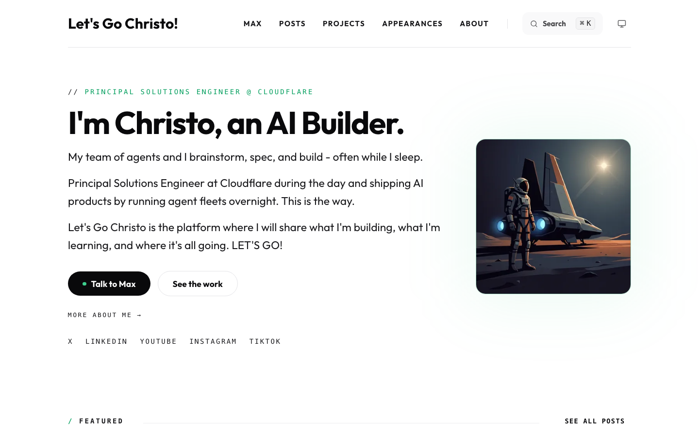
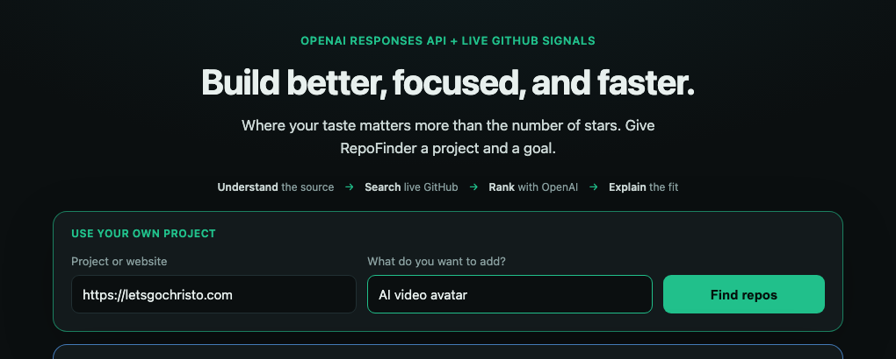
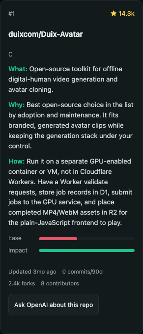
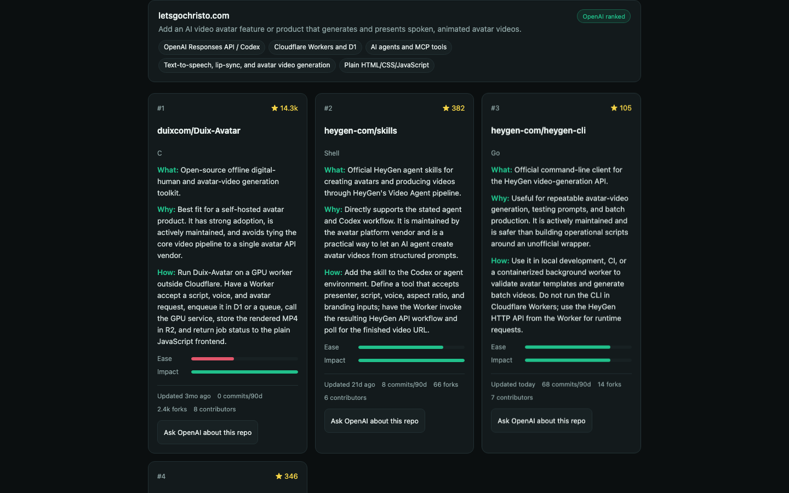
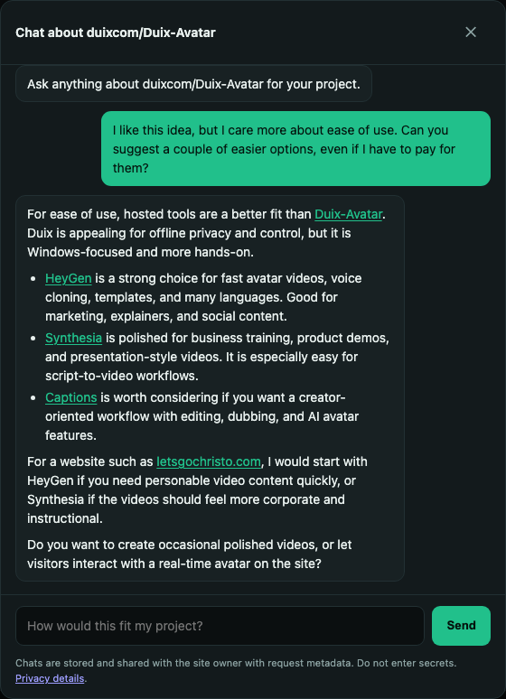

Story V3
Live demo ↗

The idea
What if my portfolio could introduce me?
Let visitors meet Christo without booking a call.
Give the idea context
Start with the actual site and outcome.

Press here
The first result
The ranking reveals the tradeoff.

Add the constraint
Tell it what the star count cannot know.
“I like this idea, but I care more about ease of use. Can you suggest a couple of easier options, even if I have to pay for them?”
Watch the answer change
Hosted tools fit this project better.

Turn the answer into an experiment
A next step, not another tab.
One capability, two ways to work
Humans refine. Agents repeat.
Explore through conversation
Search, inspect, add taste, and ask follow-up questions.
Ease matters more.Try HeyGen first.
Same engine
RepoFinder
context + evidence + reasoning
Reuse structured recommendations
An agent calls one tool and continues its own workflow.
recommend_repos({
source,
goal
})The value
From an idea to a focused experiment.
letsgochristo.com+AI video avatar→HeyGen prototype
Start with a shortlist shaped by the real project.
See implementation friction before committing.
Turn the conversation into one focused next step.